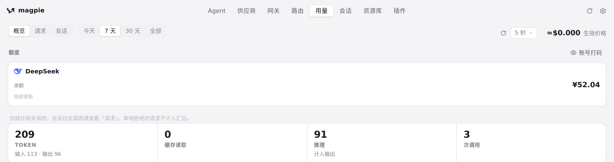
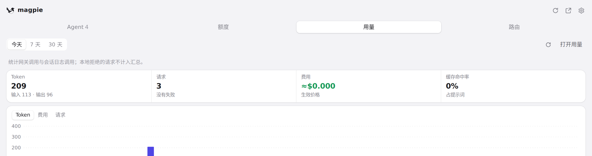
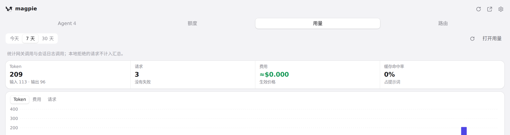

#978 界面预览
commit f92b198 · 回到 PR · 本 PR 让原生用量窗口在窄宽度下头部不再把「立即重新读取」和合计拆到不同行、会话 chip 与六个 KPI 小字不再被裁切、图表日期不再挤在一起，并修好周期高亮：重绘时从当前可见位置续接、换行时只盖住选中那一行、resize 或从别的页返回后重新对齐。托盘（面板）的周期按钮在响应重绘时保持不换，按下期间的点击不再丢失。
红线是鼠标走过的轨迹，红色圆环是一次点击；底部文字是这一步在做什么。空格暂停，← → 逐段查看。
用量页的周期高亮与刷新控件 · 用量页顶部：周期选择、「立即重新读取」与合计

用量页的周期高亮与刷新控件 · 点「7 天」之后的周期高亮与合计

面板用量的周期按钮 · 面板「用量」：周期按钮、立即重新读取与合计

面板用量的周期按钮 · 切到「7 天」后的周期按钮与合计